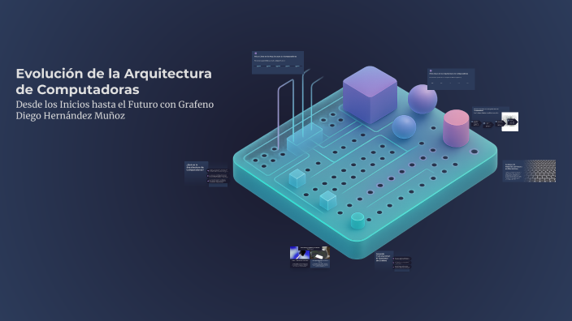
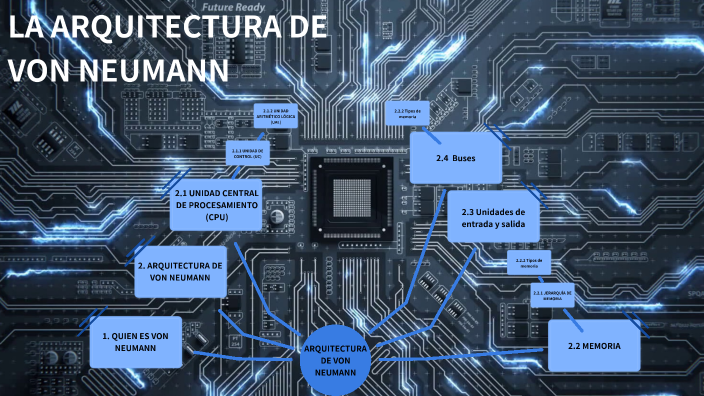

Unidad 1: Arquitectura de Cómputo
La arquitectura de cómputo define cómo se organizan los componentes de una computadora para procesar información. Es el conjunto de principios que determinan cómo interactúan la CPU, la memoria, los buses y los dispositivos de entrada/salida.
- Von Neumann: Modelo clásico con CPU, memoria y E/S secuenciales.
Ventaja: Simplicidad y bajo costo.
Problema: cuello de botella del bus compartido. - Harvard: Separa memoria de datos e instrucciones, mejorando velocidad en sistemas embebidos y reduciendo conflictos.
Usado en microcontroladores y DSP. - Pipeline: Procesamiento segmentado en etapas (fetch, decode, execute) para aumentar rendimiento.
Permite que varias instrucciones estén en ejecución simultáneamente.
Base de los procesadores modernos. - Multiprocesamiento: Varios procesadores trabajando en paralelo para tareas complejas.
Tipos: SIMD (una instrucción sobre múltiples datos) y MIMD (múltiples instrucciones sobre múltiples datos).
Usado en supercomputadoras, servidores y sistemas de IA.
Aplicaciones: Supercomputadoras, servidores de alto rendimiento, smartphones modernos, sistemas de inteligencia artificial, videojuegos y big data.
Ejemplo práctico: Los procesadores Intel y AMD actuales combinan pipeline y multiprocesamiento para ejecutar videojuegos, software pesado y aplicaciones de análisis de datos masivos.

- Los modelos clásicos aún se usan en computadoras simples y sistemas educativos.
- El pipeline es la base de los procesadores modernos, mejorando la ejecución de instrucciones.
- El multiprocesamiento es esencial en servidores y supercomputadoras para manejar grandes volúmenes de datos.
- La arquitectura Harvard se aplica en sistemas embebidos como automóviles, robots y dispositivos IoT.
Tendencias actuales:
Arquitecturas híbridas que combinan núcleos de alto rendimiento y núcleos de bajo consumo (ej. ARM big.LITTLE).
Integración de GPU y aceleradores de IA dentro de la CPU.
Uso de arquitecturas paralelas en la nube para servicios de streaming y aprendizaje automático.

Unidad 2: Unidad Central de Procesamiento (CPU)
La CPU es el cerebro de la computadora, encargada de ejecutar instrucciones y coordinar procesos. Está compuesta por varios elementos internos que trabajan en conjunto para procesar datos de manera rápida y eficiente.
- Registros: Memorias rápidas internas que almacenan datos temporales.
Ejemplos: acumulador, contador de programa, registro de estado.
Ventaja: acceso ultrarrápido comparado con la RAM. - ALU (Unidad Aritmético-Lógica): Realiza operaciones matemáticas (suma, resta, multiplicación) y lógicas (AND, OR, NOT, comparaciones).
Fundamental para cálculos y toma de decisiones. - Unidad de Control (UC): Coordina el flujo de datos e instrucciones dentro de la CPU.
Se encarga de interpretar las instrucciones y dirigir la ALU y los registros. - Ciclo de instrucción: Proceso básico de la CPU:
1. Fetch: Buscar la instrucción en memoria.
2. Decode: Decodificar la instrucción.
3. Execute: Ejecutar la operación. - Velocidad de reloj: Marca el ritmo de ejecución de instrucciones (GHz).
A mayor frecuencia, más operaciones por segundo. - Núcleos: Cada núcleo es una CPU independiente dentro del procesador.
Procesadores modernos tienen múltiples núcleos para ejecutar varias tareas en paralelo. - Hilos (Threads): Divisiones lógicas de cada núcleo que permiten manejar más procesos simultáneamente.
Ejemplo práctico: Al abrir Word, la CPU busca la instrucción en RAM, la decodifica y la ejecuta mostrando la interfaz. En un procesador multinúcleo, mientras un núcleo ejecuta Word, otro puede manejar música en segundo plano.
Aplicaciones: Computadoras personales, servidores, consolas de videojuegos, smartphones, sistemas de inteligencia artificial y supercomputadoras.
.webp)
- Los registros permiten operaciones inmediatas sin depender de la memoria principal.
- La ALU es esencial para cálculos matemáticos y comparaciones lógicas en cualquier programa.
- La Unidad de Control asegura que todas las partes trabajen sincronizadas.
- El ciclo de instrucción es la base del funcionamiento de cualquier procesador.
- Los núcleos múltiples y el hyper-threading permiten ejecutar videojuegos, software de diseño y aplicaciones de IA de manera fluida.
Tendencias actuales:
Procesadores híbridos con núcleos de alto rendimiento y núcleos de bajo consumo (ej. ARM big.LITTLE, Intel Alder Lake).
Integración de GPU y aceleradores de IA dentro del chip.
Optimización para tareas de aprendizaje automático, big data y realidad virtual.
.webp)
Unidad 3: Chip Set
El chipset conecta y coordina los componentes principales de la computadora. Es un conjunto de circuitos integrados que actúan como puente entre la CPU, la memoria, los buses y los dispositivos de entrada/salida.
- Controlador de bus: Administra el flujo de datos entre CPU, memoria y periféricos.
Tipos de buses: datos, direcciones y control.
Garantiza comunicación ordenada y sincronizada. - Controlador de interrupciones: Atiende eventos externos como teclado, ratón o red.
Mejora eficiencia al permitir que la CPU responda solo cuando es necesario. - DMA (Acceso Directo a Memoria): Permite transferencias rápidas entre memoria y periféricos sin intervención constante de la CPU.
Ejemplo: copiar archivos desde un disco duro a RAM. - Temporizadores: Controlan tiempos de ejecución y sincronización de procesos.
Usados en sistemas operativos para medir ciclos y coordinar tareas. - Video: Gestiona gráficos y pantallas.
Incluye controladores de video integrados o dedicados (GPU).
Fundamental en videojuegos y aplicaciones gráficas. - Puertos de E/S: Permiten la conexión de dispositivos externos como USB, discos duros y tarjetas de red.
Ejemplo práctico: En una PC gamer, el chipset coordina la comunicación entre CPU, RAM y tarjeta gráfica para evitar retrasos y garantizar un rendimiento fluido en videojuegos.
Aplicaciones: Computadoras de escritorio, laptops, servidores, estaciones de trabajo, consolas de videojuegos y sistemas embebidos.
.webp)
- Los controladores de bus permiten que CPU, memoria y periféricos se comuniquen sin conflictos.
- El controlador de interrupciones evita que la CPU pierda tiempo preguntando constantemente a los dispositivos.
- El DMA libera a la CPU de tareas repetitivas, mejorando la velocidad del sistema.
- Los temporizadores son esenciales para la sincronización de procesos y multitarea.
- El controlador de video es clave para aplicaciones gráficas, diseño 3D y videojuegos.
Tendencias actuales:
Chipsets modernos integran funciones antes separadas (ej. Intel Platform Controller Hub).
Soporte para memorias de alta velocidad (DDR5) y almacenamiento NVMe.
Integración de controladores de red, audio y video en un solo chip.
Optimización para inteligencia artificial y procesamiento paralelo en tiempo real.
.webp)
Unidad 4: Procesamiento Paralelo
El procesamiento paralelo permite ejecutar múltiples operaciones al mismo tiempo, aumentando la eficiencia y reduciendo los tiempos de ejecución. Es fundamental en sistemas modernos que requieren gran capacidad de cálculo.
- SIMD (Single Instruction, Multiple Data): Una instrucción aplicada a muchos datos en paralelo.
Usado en GPUs para gráficos y cálculos masivos.
Ejemplo: procesar miles de píxeles de una imagen al mismo tiempo. - MIMD (Multiple Instruction, Multiple Data): Varios procesadores ejecutan diferentes instrucciones sobre distintos datos.
Usado en supercomputadoras y servidores de alto rendimiento. - Memoria compartida: Todos los procesadores acceden a la misma memoria.
Ventaja: comunicación rápida entre núcleos.
Desventaja: riesgo de conflictos de acceso. - Memoria distribuida: Cada procesador tiene su propia memoria y se comunican por red.
Usado en clusters y sistemas de cómputo en la nube. - Procesamiento paralelo híbrido: Combina memoria compartida y distribuida para optimizar rendimiento en grandes sistemas.
Aplicaciones: Inteligencia artificial, gráficos 3D, simulaciones científicas, big data, minería de datos, realidad virtual y servicios en la nube.
Ejemplo práctico: Los servidores de Google y Amazon usan procesamiento paralelo para manejar millones de solicitudes simultáneas, garantizando velocidad y disponibilidad.
- Las GPUs aplican SIMD para renderizar gráficos en videojuegos y aplicaciones de diseño.
- Los clusters de supercomputadoras aplican MIMD para resolver problemas científicos y simulaciones climáticas.
- La memoria compartida es común en procesadores multinúcleo de laptops y PCs.
- La memoria distribuida se usa en sistemas de nube y redes de servidores.
- El procesamiento paralelo híbrido se aplica en centros de datos para optimizar recursos.
Tendencias actuales:
Computación cuántica que promete paralelismo a nivel subatómico.
Procesadores especializados en IA (TPUs de Google, Neural Engines de Apple).
Uso de arquitecturas paralelas en la nube para servicios de streaming, aprendizaje automático y análisis de datos masivos.
GPUs con miles de núcleos para acelerar aplicaciones de realidad aumentada y simulaciones científicas.